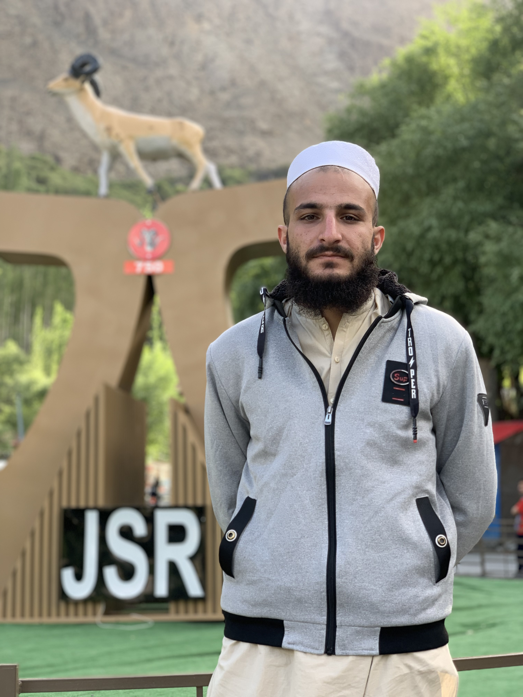

Muhammad Bilal

Objectives
To become a Professional Web Developer.
Work on the freelance market places.
Getting a job in a Big companies.
Getting great opertunities in the Tech industry.
Education
Bachelor of Sciences, in Urban and Regional Planning. University of Peshawar, Pakistan.
Work Experience
Autocad Draftsman - Safecore consultants, Peshawar
October, 2022 - November, 2022
Skills
Autocad 2d & 3d: ⭐⭐⭐⭐
Mirosoft office Suite: ⭐⭐⭐
Graphic Designing: ⭐⭐⭐
Awards and Certications
Qirat Competition, in Gazali Public School (June, 2017)
Others
My Hobbies
Contact Me